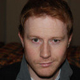

About
what is openslp?
Download
how to get openslp
Contribute
how to help out
Documentation
how to find out more
Credits
who to blame
History
The OpenSLP project was started by Caldera Systems, Incorporated, a linux distributor based in Orem, Utah, in the mid 90's. Caldera has since merged with SCO and been renamed The SCO Group.
The original author of the OpenSLP source code was Matthew Peterson, an employee of Caldera. In early 2004 Matt left Caldera, inviting Bryant Eastham of emWare to take over the project. Bryant, in accordance with the goals of his company, added complete support for IPv6. A year later, Bryant passed the project on to John Calcote, then of Novell. While John continues management of the project today, most of the real work is done by the rest of the OpenSLP team.
Team Members
The current members of the OpenSLP development team are comprised both of employees of companies with an interest in using SLP within their products, and of individual contributors who have an interest in service advertising and open source in general. (Note: Except for the project maintainer, team members are listed in random order.)
John Calcote - Maintainer
John Calcote is currently an employee of Fusion-io in Salt Lake City, Utah where he works on management software for Fusion's hardware products. John has significant experience in low- and mid-level systems software design and implementation on a variety of platforms including Linux and Windows. While at Novell, he added support for DHCP to OpenSLP and support for OpenSLP to Novell's eDirectory product. John is the author of the No Starch Press title, Autotools. John can be reached at john.calcote@gmail.com.
Matthew Hird
Matthew is an infrastructure design authority at Thales. He's worked in pretty much every language at every level in the software stack from assembler through device drivers, signal processing and up into software architecture. Matt can be contacted at gingerprince@users.sourceforge.net.
Nick Wagner
Nick is a Sr. Software Engineer working at Electronic Theatre Controls. He graduated from the University of Wisconsin - Madison with a BS in 1995, and while he has worked on other things, he seems to be continually sucked into projects requiring knowledge of network communications. Contact Nick at nwagner@etcconnect.com.
Alan Adams
Alan works as a software developer at Novell. He has helped maintain the OpenSLP-based SLP User Agent functionality utilized by the Novell Client for Windows 7, as well as the non-OpenSLP User Agent functionality in the Novell Client for Windows XP/2003. Alan can be reached at alan.adams@novell.com.
Michael Schroeder
Michael has been working for SUSE since December of 2000. He is the current maintainer of SUSE's OpenSLP package. Michael can be reached at mls@suse.de.
Varun Chandramohan
Varun is a network protocol developer employed with IBM's Linux Technology Center. His expertise is in IPv6 stack, Linux network programming and C. He has contributed to many open source projects and has been maintaining a few of them. Varun's other interests include trekking, traveling and blogging. He blogs at linux-hacks on blogspot.com and hobbymonger on wordpress.com. Varun can be reached at c_varun@users.sourceforge.net.
Roel van de Kraats
Roel is a product developer currently employed by Cargotec ACT in the Netherlands and has been working on logistic systems based on automated guided vehicles for over 10 years now. Roel can be reached at rkraats@dds.nl.
Aaron Burgemeister
Aaron is a confirmed computer geek working at Novell on security and identity products. In his free time he likes to learn new technologies and figure out how everything works, which led him to OpenSLP. As a FOSS and Linux evangelist he focuses on the software available in those categories to create the highest-quality software differentiating on security, stability, maintainability, and availability. Aaron can be reached at dajoker@gmail.com and at ab@novell.com.
Richard Morrell
Richard has been a freelance software engineer for the past 30 years, mainly in embedded systems. He is involved in OpenSLP through working for Thales Underwater Systems UK, implementing bugfixes and performance/scalability enhancements. Richard can be reached at rim-tus@users.sourceforge.net.
Additional Credits
Many people have worked on OpenSLP during the last 15 years. The following is a list of significant contributors. This list is by no means complete, but it's the best information available to us at this time:
Past Team Members
- Matthew Peterson
- Bryant Eastham
- Jon Carey
- David McCormack
- Ganesan Rajagopal
- Matthieu Desmons
- Evan Hughes
- Michael Day
Other Significant Contributors
- Susan G. Kleinmann
- Timothy Zurcher
- Peter Marschall
Please contact one of the OpenSLP team members above if feel that you or someone you know should be included. We'll happily add your name.
Sponsorship
Several companies have sponsored the OpenSLP project over the years. Most of the current team members do the work they do with the approval and support of their companies.
Besides lending the help of several developers over the years, Novell (Attachmate) currently sponsors OpenSLP by paying for our use of the openslp.org domain name.
We're also grateful to sourceforge.net for providing a wonderful FOSS hosting environment.